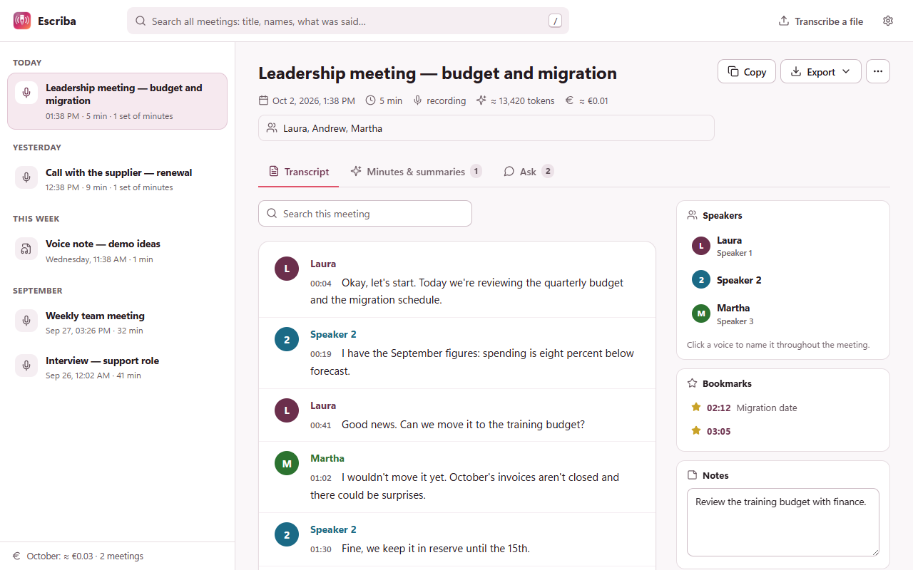
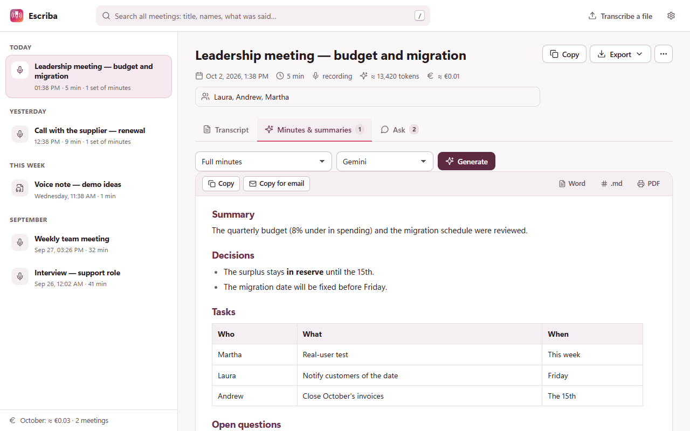
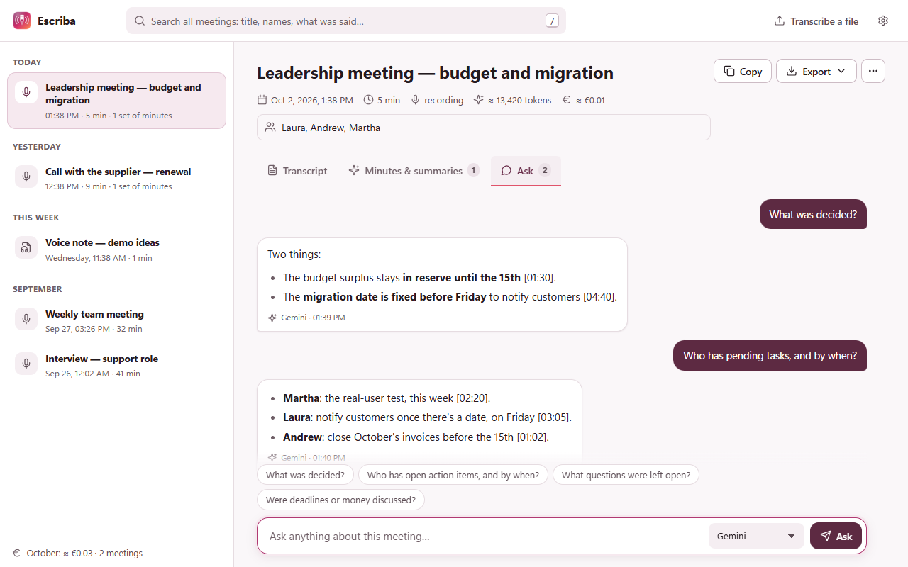
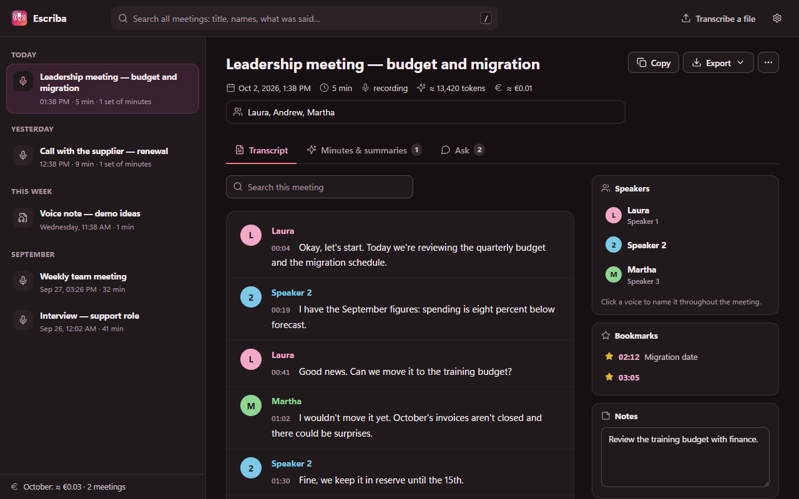

Read it by speaker
The transcript arrives while you record, grouped by who spoke, with timestamps. Name each voice once and it changes everywhere.

Minutes in one click
Full minutes, short summary, tasks with owners, a follow-up email or your own template — with Gemini, GPT or Claude. Export to Word, PDF or SRT.

Ask the meeting
“What was decided?” “Who has pending tasks?” It answers from the transcript and cites the minute.

Light or dark, your way
Dark mode that follows your system, a tidy library with all your meetings grouped by day, and search across everything that was said.

Private by design
- No server: audio goes from your browser to the AI provider you choose, with your own key.
- No telemetry, no analytics, no accounts. The developer can't see your data.
- Nothing gets lost: 5-minute segments, audio kept in your browser until it's transcribed, automatic retries and recovery if Chrome closes.
Questions
Is it really free?
Yes. Escriba costs nothing. You pay your AI provider only for what you use, and Gemini's free tier is enough for daily meetings.
What do I need?
Chrome and a free Gemini API key from aistudio.google.com/apikey. GPT or Claude keys are optional, for minutes and questions.
Does it work with the Teams desktop app?
Not yet: it records meetings that run in the browser (Meet, Teams web, Zoom web, Jitsi…) and in-person meetings with the microphone.
Which languages?
The interface is in English and Spanish, with light and dark mode. Meetings can be in any language Gemini understands, even mixed.